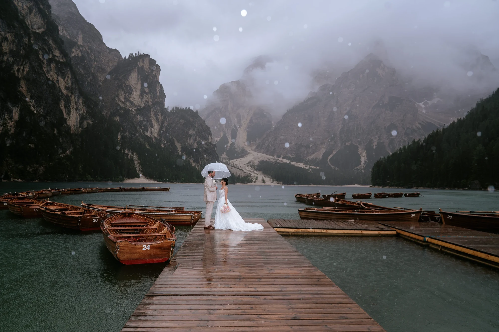

Neugierig auf ein Elopement, das Abenteuer und Romantik in den atemberaubenden Dolomiten vereint? Unsere Stärke ist es, unvergessliche Berghochzeiten ganz nach eurer Vision zu gestalten.
Wir beginnen damit, den perfekten Ort für euch zu finden — nach Erreichbarkeit, Landschaft und Stimmung. Ob Gipfel oder stiller Bergsee, jedes Detail dreht sich um euch beide.
Wenn der Tag mehr Hände braucht, arbeiten wir mit einem festen Kreis: Planung vor Ort durch Dolomites Wedding Planner, Fotografie durch Blitzkneisser.

Gipfel, See, Wiese oder Grat — wir wählen den Ort nach eurer Vision, der Jahreszeit und der gewünschten Gehstrecke.
Ein entspannter Ablauf, das beste Licht, ein flexibler Wetterplan und alle Logistik — Transfers, Blumen, Hair & Make-up.
Persönliche Gelübde, auf Wunsch freie oder standesamtliche Trauung, und Fotos, die alles genau so festhalten, wie es sich anfühlte.
Ein ruhiger Startpunkt für Paare, die ein Dolomiten-Elopement oder eine bewusste Hochzeit in den Bergen planen — und einen klaren Überblick suchen, wo sie beginnen.


Unsere Planungspartnerin in den Dolomiten — Logistik, Genehmigungen, Unterkunft und jedes Detail vor Ort geregelt, damit ihr einfach nur da sein könnt. Mit jahrelanger Erfahrung und inmitten der Dolomiten aufgewachsen, kennt sie jeden Stein — das sorgt für eine herrlich entspannte Atmosphäre.
Dolomites Wedding Planner →Gründer und leitender Fotograf — Tiroler, daheim zwischen Innsbruck und den Dolomiten. Ausgezeichnet (Way Up North Awards 2024), veröffentlicht im Rangefinder. Andreas führt jedes Paar ins richtige Licht und hält den Tag so fest, wie er sich wirklich anfühlt.
Blitzkneisser →Wir verwenden Cookies für anonyme Statistik (Google Analytics über Google Tag Manager), um die Website zu verbessern. Die Analyse läuft nur mit deiner Einwilligung. Datenschutz